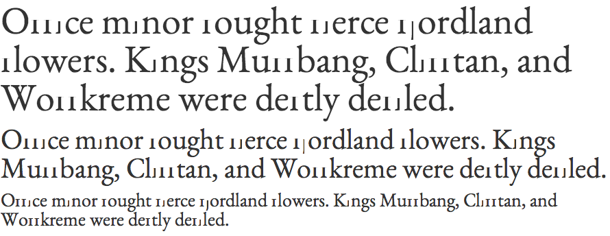

Possible bug in Chrome on OSX when rendering fonts that have been auto instructed with ttfautohint and contain composite glyphs that are used in OpenType GSUB substitutions.
Top is real text rendered with webfont. Lower is screenshot of same text from Chrome 26 on OSX 10.8.3
View this page in Firefox to see what the difference is!
Office minor fought fierce fjordland flowers. Kings Muffbang, Clifftan, and Woffkreme were deftly defiled.
Office minor fought fierce fjordland flowers. Kings Muffbang, Clifftan, and Woffkreme were deftly defiled.
Office minor fought fierce fjordland flowers. Kings Muffbang, Clifftan, and Woffkreme were deftly defiled.
